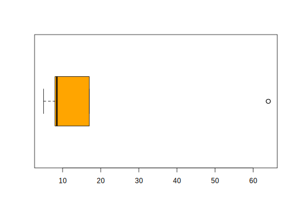

Capítulo 2 Objetos en R
Cuando nos referimos a objetos estamos hablando de entidades que combinan estado (atributo), comportamiento (método) e identidad; esto quiere decir, un objeto estará compuesto por datos también llamados atributos que tendrán valores concretos, con estos objetos se realizarán algunos procedimiento o método, esto corresponde al comportamiento que pueda tener dicho objeto, además todos los objetos se pueden identificar o diferenciar entre todos los demás a esto es lo que llamados identidad del mismo. Cuando los lenguajes de programación se basan en este paradigma es muy util a la hora de reutilizar códigos o métodos, logrando mejorar o simplemente flexibilizar, ajustar dicho código a situaciones particulares.
Los principales objetos con los que se trabajan con este lenguaje de programación son:
Vector.
Factor.
Arreglo.
Matriz.
Data frame.
Series de tiempo.
Listas.
| Objeto | Tipos | ¿Varios tipos posibles? |
|---|---|---|
| Vector | N, C, Comp o Log | No |
| Factor | N o C | No |
| Arreglo | N, C, Comp o Log | No |
| Matriz | N, C, Comp o Log | No |
| Data.frame | N, C, Comp o Log | Si |
| S.T | N, C, Comp o Log | Si |
| Lista | N, C, Comp,Log, Fun, Expr. | Si |
N = numérico
C = caracter
Comp = complejo
Log = lógico
Fun = función
Expr = expresión
2.1 Tipos de objetos en R
Entre los principales objetos tenemos:
- Datos Numéricos:
Dentro de los datos numéricos tenemos datos “numeric”, enteros “integer”, complejo “complex”. La mayor parte del tiempo los números son “numeric”.
Cualquier número real se puede expresar mediante notación científica, esto es diviendo o multiplicando por 10 tantas veces como sea necesario para que todos los dígitos aparezcan a la derecha del punto decimal y de modo que el primer dígito después del punto no sea cero, por ejemplo \(7325.689=7.325689\times 10^4\). Con el lenguaje de programación R la notación científica se imprime con una e para indicar el exponente, para continuar con el ejemplo anterior la notación en R sería \(7.325689e+4\). Esta notación se utiliza para almacenar los datos numéricos, lo que comumente se llama almacenamiento de punto flotante, el cual consta de tres partes: un signo (+1 ó -1), un exponente (un enteno \(n\)) y una precisión (\(p\)) \(\pm 1\times p\times 10^n\).
Una de las maneras de trabajar con un dato entero es colocarle como sufijo la letra L, por ejemplo el entero uno se puede escribir como 1L, también podemos tranformar valores numéricos a enteros con el comando as.integer().
Es importante acotar que la representación de punto flotante no puede almacenar todos los números con exactitud, por ejemplo, la raíz cuadrada de 2 es irracional y la representación en la computadora (de punto flotante) es una aproximación
- Datos Categóricos:
R tiene dos clases distintas para trabajar con datos categóricos: Factor y carácter.
Los datos de tipo Factor se utiliza cuando se tienen variables que se pueden registrar simplemente por medio de categorías, utilizadas para agrupar los datos, un ejemplo de este tipo de datos podría ser el historial de los distintos navegadores usados por los usuarios para acceder a un sitio web, así los datos se podrían agrupar dependendiendo del servidor que usaron los usuarios.
Los datos de tipo carácter son los que representan palabras o códigos únicos que identifican, como por ejemplo una dirección de un ordenador, también llamados string por su traducción en ingles; este tipo de datos en R se colocan utilizando comillas dobles " o simples ' para delimitar un string.
- Datos Lógico:
Estos datos también son llamados datos Booleanos, se caracterizan por tomar dos valores verdadero ó falso (TRUE o FALSE), generalmente se obtienen como el resultado de alguna función, por ejemplo podemos usar la función is.numeric() para saber si una variable o cualquier objeto que se introduzca cumple con las características de ser un valor numérico, en caso de ser cierto la función retornará TRUE y en caso contrario retornará FALSE.
- Datos de Fecha y Hora:
En la base del lenguaje de programación de R se encuentran dos paquetes que trabajan los datos de tipo fecha y hora: Date (fechas) y POSIXt (fecha, hora y huso horario), las siglas POSIX se refieren a Portable Operating System Interface; esta última clase contiene dos subclases, POSIXct y POSIXlt que se diferencian simplemente en la forma en que almacenan internamente la fecha y la hora. Adicional a estos paquetes se encuentra el paquete lubridate el cual suele ser muy util para la extracción de componentes de un objeto fecha y hora de clase POSIXct.
- Valores pérdidos, NA:
Generalmente cuando se realizan encuestas o se toman datos se puede presentar la situación de que para ciertos individuos o categorias no se consigan datos, a este tipo de datos se les llama datos faltantes, o valores pérdidos; son valores que no están presentes. El lenguaje de programación R los trata como NA, debido a las siglas en ingles de not available, cabe destacar que no es un string sino un tipo de objeto, estos valores pueden alterar los resultados que nos den algunas funciones.
- Inf:
Muchos cálculos nos pueden llevar a respuestas con valor infinito positivo o infinito negativo, en R estos objetos se presentan por Inf y -Inf. Estos resultados se pueden tener cuando se realizan operaciones como 1/0
- NaN:
El nombre NaN se debe a su significado en ingles “not a number”, es decir, no es un número. Este tipo de objeto se da cuando se realiza una operación que no da un valor numérico, por ejemplo una función indeterminada (como la división 0/0) o el resultado de una función evaluada en valores que no pertenecen a su dominio.
Un valor NaN es al mismo tiempo un valor NA, pero no al contrario. Tanto NaN como NA son ambos datos faltantes, la única diferencia es que NaN se produce de una operación matemática.
- NULL:
Generalmente indica que alguna acción no se puede ejecutar por no estar definida o disponible. Representa los objetos nulos. Indica la ausencia del dato. Se utiliza para colocar una variable sin valor, como por ejemplo, para inicializar un vector que se va a utilizar como vector incremental.
Más adelante trabajaremos por separado otros objetos muy usados a la hora de programar en R.
2.2 Manejo de Objetos
2.2.1 Atributos de un Objeto
Los atributos de un objeto es la información específica sobre dicho objeto. Entre los principales encontramos:
Nombres (
names) : Este muestra las etiquetas de los elementos individuales de un vector o una lista.Dimensiones (
dimensions): Dimensiones de los arrays (alguna puede ser cero).Dimnames (
dimnames): Nombre correspondiente a las dimensiones de los arrays.Modo (
mode): Tipo básico en un vector o array (lógico, entero, real, carácter, entre otros).Tipo (
typeof): Tipo de los vectores o arrays (lógico, entero, double, complejo, carácter, entre otros).Clase (
class): Vector alfanumérico con la lista de las clases del objeto.Otros: Otros atributos definidos por el usuario.
Todo objeto tiene dos atributos intrínsecos como tal; tipo y longitud.
Tipo: Numérico, caracter, complejo y lógico (Verdadero o Falso).
Longitud: Número de elementos en el objeto.
Para ver el tipo y la longitud de un objeto utilizamos las funciones mode() y length().
Mediante la función attributes() podemos obtener una lista de los atributos no intrínsecos y con attr() podemos usar un atributo seleccionado.
2.2.2 Nombres válidos para un objeto
Los nombres válidos para los objetos pueden ser el resultado de combinaciones entre letras números y el punto.
Estos son sensibles a las mayúsculas y minúsculas (a es diferente de A).
Se recomienda usar nombres distintos a los usados ya en funciones creadas en los paquetes cargados, en especial a las de los paquetes base (por ejemplo function, if, c).
2.2.3 Operador de asignación e igualdad
Las asignaciones de nombres a objetos se hace mediante el operador <- o equivalente ->, hay que tomar en cuenta que estos símbolos no llevan espacio entre ellos. Por otra parte, se recomienda usar el símbolo = unicamente para los argumentos de las funciones.
x <- 4
x## [1] 45 -> x
x## [1] 52.3 Principales funciones para trabajar en la consola
Entre las funciones más comunes y utilizadas tenemos:
ls()-> Lista los elementos objetos creados en la consola. sólo muestra los nombres de los mismos.
name <- "Carmen"
n1 <- 10
n2 <- 100
m <- 0.5
ls()## [1] "m" "n1" "n2" "name" "x"ls.str()-> Muestra algunos detalles de los objetos en memoria.
ls.str()## m : num 0.5
## n1 : num 10
## n2 : num 100
## name : chr "Carmen"
## x : num 5rm()-> Para borrar objetos en memoria.
rm(n1) #Eliminar el objeto n1
ls()## [1] "m" "n2" "name" "x"rm(list=ls()) #Eliminar todos los objetos creados
ls()## character(0)paste()-> Esta función une todos los vectores de caracteres que se le suministran y construye una sola cadena de caracteres.
paste("Aprendiendo", "a", "programar","con","R") ## [1] "Aprendiendo a programar con R"abs()-> calcula el valor absoluto de un valor.
y <- 5-8
abs(y)## [1] 3round()-> redondea un número a los decimales que se le indiquen.
round(0.1475945131, 3)## [1] 0.148sort()-> ordena un vector que se le indique.
sort(c(8,6,4,2,8,6,4,2))## [1] 2 2 4 4 6 6 8 8is.algo()-> indica el tipo de estructura de datos y regresa un valor lógico.
is.list(c(1,2,3))## [1] FALSEmean()-> se utiliza para calcular el promedio aritmético de los elementos evaluados.
mean(c(5,8,9,15,17,64,9,5,8,8,8,17,64,5))## [1] 17.29La forma general de usar la función mean es mean(x, ...), donde (...) es llamado elipsis, y es la manera en que R pasa a través de los argumentos de una función sin tener que nombrarlos ni especificarlos.
Sin embargo el método por default S3 es mean(x, trim = 0, na.rm = FALSE, ...), donde trim y na.rm tienen valores por defecto, lo cual los hace argumentos opcionales. Sin embargo cada uno tiene su función específica.
Por ejemplo:
linkedin <- c(16, 9, 13, 5, 2, 17, 14)
facebook <- c(17, 7, 5, 16, 8, 13, 14)
# Promedio simple de la suma
avg_sum <- mean(linkedin + facebook)
# Promedio truncado de la suma
avg_sum_trimmed <- mean((linkedin + facebook), trim = 0.2)
# Evaluando ambos promedios
print(avg_sum)## [1] 22.29print(avg_sum_trimmed)## [1] 22.6linkedin <- c(16, 9, 13, 5, NA, 17, 14)
facebook <- c(17, NA, 5, 16, 8, 13, 14)
# Promedio simple de linkedin con argumentos por defecto
mean(linkedin)## [1] NA# Promedio simple de linkedin con na.rm = TRUE
mean(linkedin, na.rm = TRUE)## [1] 12.33median()-> devuelve el valor de la mediana de los elementos evaluados.
median(c(5,8,9,15,17,64,9,5,8,8,8,17,64,5))## [1] 8.5Moda-> No hay una función que realice este cálculo directamento por lo tanto tenemos que recurrir a otras dos funciones. La moda nos representa el valor que tiene mayor frecuencia absoluta en una distribución de datos. Para realizar su cálculo utilizamos las funcionessort()para ordenar los datos ytable()para ver el número de repeticiones de cada elemento.
x <- c(5,8,9,15,17,64,9,5,8,8,8,17,64,5)
sort(x)## [1] 5 5 5 8 8 8 8 9 9 15 17 17 64 64table(x)## x
## 5 8 9 15 17 64
## 3 4 2 1 2 2range()-> es el intervalo entre el valor máximo y el valor mínimo. Permite obtener una idea de la dispersión de los datos, cuanto mayor es el rango, más dispersos están los datos de un conjunto.
x <- c(5,8,9,15,17,64,9,5,8,8,8,17,64,5)
range(x)## [1] 5 64quantile()-> son los tres valores que dividen un conjunto de datos ordenados en cuatro partes porcentualmente iguales.
quantile(x)## 0% 25% 50% 75% 100%
## 5.0 8.0 8.5 16.5 64.0IQR()-> la diferencia entre el tercer y el primer cuartil de una distribución. Es una medida de la dispersión estadística.
IQR(x)## [1] 8.5boxplot()-> proporcionan una visión general de la simetría de la distribución de los datos; si la mediana no está en el centro del rectángulo, la distribución no es simétrica. Permite ver como es la dispersión de los puntos con la mediana, los percentiles 25 y 75 y los valores máximos y mínimos.
– Son útiles para ver la presencia de valores atípicos también llamados outliers.
– \(Q_1 - 1.5 * IQR\)
– \(Q_3 + 1.5 * IQR\)
boxplot(x, col = "orange", horizontal = TRUE)
sd()-> la desviación estandar es una medida del grado de dispersión de los datos con respecto al valor promedio. Se define como la raíz cuadrada de la varianza de la variable.
sd(x)## [1] 20.2var()-> es otra medida de dispersión y sirve para identificar a la media de las desviaciones cuadráticas de una variable de carácter aleatorio, considerando el valor medio de ésta.
x <- c(5,8,9,15,17,64,9,5,8,8,8,17,64,5)
var(x)## [1] 408.1summary()-> permite calcular algunas medidas descriptivas elementales de todas las variables del fichero simultáneamente.
summary(x)## Min. 1st Qu. Median Mean 3rd Qu. Max.
## 5.0 8.0 8.5 17.3 16.5 64.0summary(cars)## speed dist
## Min. : 4.0 Min. : 2
## 1st Qu.:12.0 1st Qu.: 26
## Median :15.0 Median : 36
## Mean :15.4 Mean : 43
## 3rd Qu.:19.0 3rd Qu.: 56
## Max. :25.0 Max. :120apply()-> permite realizar la misma operación en todas las filas y columnas de un arreglo simultáneamente. Sólo hay que indicarle la operación a realizar y el índice/índices sobre los cuales ha de realizarla.
matriz <- matrix(1:4,nrow = 2,ncol = 2)
matriz## [,1] [,2]
## [1,] 1 3
## [2,] 2 4apply(matriz,1,sum)## [1] 4 6lapply()-> funciona igual que la funciónapply(), con la diferencia de que puede ser utilizada en listas, dataframes o vectores y el retorna una lista.
lapply(matriz,function (x) x^2)## [[1]]
## [1] 1
##
## [[2]]
## [1] 4
##
## [[3]]
## [1] 9
##
## [[4]]
## [1] 16sapply()-> funciona igual que la funciónapply(), con la diferencia de que puede ser utilizada en listas, dataframes o vectores y el retorna una vector.
sapply(matriz,function(x) x^2)## [1] 1 4 9 162.4 R como calculadora
2.4.1 Operaciones Aritméticas
Estos pueden ser usado con variables de tipo numérico o complejo, pero también lógico; en el caso de lógicos son forzados a valores numéricos, como por ejemplo 0 y 1.
- Suma (
+):
3+4## [1] 7- Resta (
-):
1-6## [1] -5- Multiplicación (
*):
5*8## [1] 40- División (
/):
15/3## [1] 5- Raíz cuadrada:
sqrt(25)## [1] 5- Potencia:
5^2## [1] 25- División Entera:
15%/%2## [1] 7- Módulo o resto de la división entera:
15%%2## [1] 1- Logaritmos:
log() (Logaritmo nepereano), logb() (Logaritmo en base a b), log10() (Logaritmo en base a 10), log2() (Logaritmo en base a 2).
log(0)## [1] -Inflog(1)## [1] 0- Exponencial:
La función que trae R para calcular la función exponencial es exp()
exp(1)## [1] 2.718- Funciones Trigonométricas
Seno sin(), coseno cos(), tangente tan(), arco-seno asin(), arco-coseno acos(), arcotangente atan()
sin(0)## [1] 0cos(0)## [1] 1tan(0)## [1] 02.4.2 Operadores Comparativos
Actuan sobre cualquier tipo de objeto, y retornan uno o varios valores lógicos, dependiendo del objeto. Estos usan todos los elementos de los dos objetos que se están comparando (reciclando los valores de los más pequeños si es necesario), devolviendo un objeto del mismo tamaño.
| Símbolo | Operador |
|---|---|
| < | Menor que |
| > | Mayor que |
| <= | Menor o igual que |
| >= | Mayor o igual que |
| == | Igual que |
| != | Diferente de |
2.4.3 Operadores Lógicos
- Y o en ingles AND:
&,&&.
Supongamos que tenemos dos operaciones lógicas a las que llamaremos condición_1,condición_2 respectivamente, y queremos saber si estas se cumplen al mismo tiempo, en R usamos condición_1 & condición_2 o su equivalente condición_1 && condición_2 y en este caso se estará evaluando si simultaneamente se cumplen las dos condiciones. En caso de que se cumplan la función retornará verdadero (TRUE).
condicion_1 <- 20 > 10
condicion_2 <- 5/2 < 5
condicion_1 & condicion_2## [1] TRUEcondicion_1 && condicion_2 ## [1] TRUEEs importante acotar que cuando se tengan vectores logical de más de un elemento se debe usar & para realizar la operación elemento a elemento. Si se estan comparando dos vectores, la comparación se hace elemento a elemento y si ambos no tienen el mismo tamaño se recurre al reciclaje de elemento para completar la comparación en el vector de menor tamaño, si en cambio colocamos && simplemente realizará la comparación para los primeros elementos e ignorará el resto.
Los símbolos && generalmente debe usarse con el uso de condicionales como if o while.
- O ó en ingles OR:
|,||
Al igual que el caso anterior supongamos que tenemos dos operaciones lógicas y queremos saber si se cumple una de las dos, entonces podemos plantearnos una expresión de este tipo, la manera de hacerlo en R es la diguiente condición_1 || condición_2, si una de las dos se cumple ésta retornará verdadero (TRUE), también lo hará si ambas se cumple.
condicion_1 <- 3 > 2
condicion_2 <- 4/5 < 7/8
condicion_1 | condicion_2## [1] TRUEcondicion_1 || condicion_2## [1] TRUECuando usamos vectores para hacer este tipo de comparaciones se sigue con | y || el mismo criterio que con & y &&.